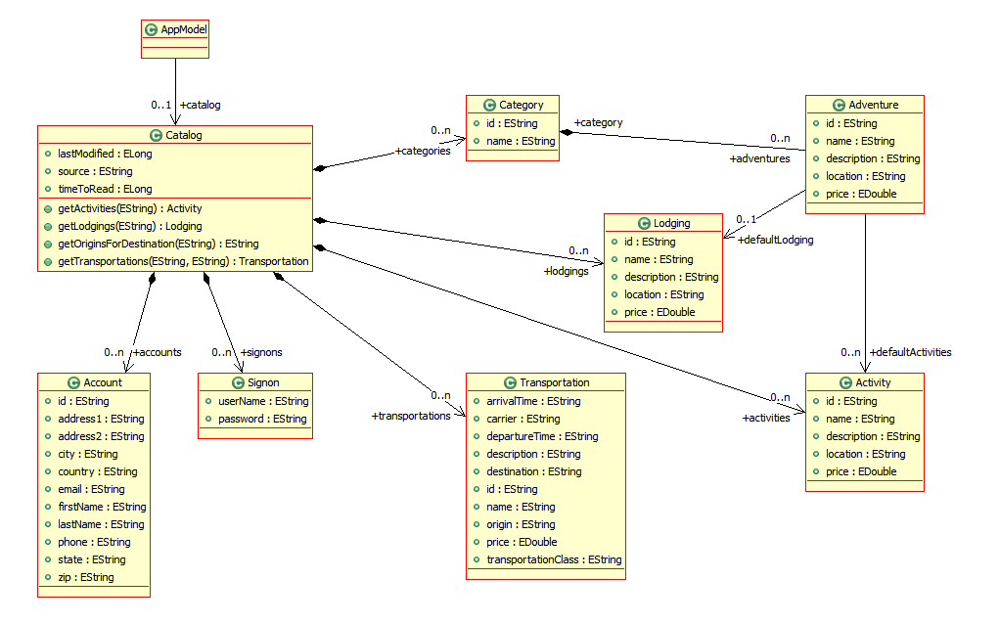

Data Binding Scenario
These scenarios are designed to provide the core functional
requirements for the binding framework and prove the binding API by
covering a set of patterns that commonly occur in a data bound GUI. In
their simplest form they will be written using SWT controls including
the support for structured JFace controls (e.g., ComboViewer,
ListViewer, TreeViewer, ListViewer and Progress Viewer)
Initially each scenario will be built with as little surrounding
framework as possible, so they could be classes that open a Shell in
their main or they could be RCP views. Validation exceptions that occur
will be fed back via console messages. In the later examples Eclipse
frameworks will be used such as building a preference page, where the
validation provided by JFace will be used to provide a richer user
interface experience.
Initially, a simple EMF based model will be the bases for these
examples. This is since EMF object have built in event notitication
support. Beyond M3, a Pojo support will have to be added.
Property Binding (Boris)
Binding simple values, in essence is the ability to bind a property
of one object to another. This is typically done to bind a text control
to a portion of a domain model. The expectation is to have a simple,
one line, intuitive API:
Committed Items
- Binding the name property of an Adventure object to the contents
of Text controls, no conversion, no validation.
- Binding the name property of an Adventure object to the contents
of Text controls, no conversion, no validation. The Text widget
editable is set to false.by the developer (can not change the name)
- Binding of a read-only property of an Adventure object to the
contents of Text controls, no conversion, no validation. Text control
is not editable as a side effect of binding to a read-only property..
- Binding a nested property of an Adventure object to the content
of a Text control, no conversion, no validation.
- Binding the name property of an Adventure object to the contents
of Text controls where conversion occurs – the model data is held all
in uppercase and displayed in lowercase with the first letter
capitalized.
- Binding the name property of an Adventure object to the contents
of Text controls where validation occurs and the name cannot be longer
than 15 characters and cannot contain spaces
- Binding the price property of an Adventure to a Text control.
Price is a double and Text accepts String so conversion will have to
occur. Validation ensure that the value is positive.
- Binding the price property of an Adventure to a Text control but
with custom conversion – the double will be validated to only have two
decimal places and displayed with a leading currency symbol, and can be
entered with or without the currency symbol.
- Binding a boolean property to a CheckBox. Adventure will have a
Boolean property “petsAllowed”
- Binding a Transportation departure time to a Text control that
formats and validates the time to and from a String. There are property
bindings that bind elements of the GUI to elements to GUI and also
elements of the domain to elements of the domain.
- Binding the max value of a spinner to another spinner.
- Binding the enabled state of several Text controls to a check
box. There will be two check boxes, so as each is enabled/disabled the
other one follows as do the states of the Text controls.
- Changing the update policy to be not automatic, but on explicit
method call (e.g. triggered by a button click)
Proposed Items
- Binding the name property of an Adventure object to the contents
of Text controls where the update of the Adventure model object occurs
on key stroke, occurs on focus being lost, and occurs with an explicit
“Apply” button.
- Binding a boolean property to a Radio Button set of Yes/No
- Binding an int property that accepts different static values to a
radio button set that displays the values. Adventure will have an int
property called “transport” with int values of 0=”Bus”, 2=”Self Drive”,
3=”Taxi”. This could also be done with a 1.5 version using an Enum.
- Binding the enabled state of a Text control to a radio button set
that represents the states “enabled” and “disabled”. There will be a
check box as well that shadows the enabled state and also drives it
that affects the radio button set as well as the radio button set
affecting the check box.
Deferred Items
none
Custom Binding (Joe)
Committed Items
- Binding the price property of an Adventure to two spinner
controls – one that shows the dollar portion and one that shows the
cents.
Proposed Items
- Binding a derived aggregate property of an Adventure that does
not exist to a text field. For example, the name and description
combined together with a comma separating them. Also combined together
on a multi line text field with a line feed separating them. The text
would render the combined property, as well as accept input and change
the Adventure, and also the derived property would refresh itself if
either of the properties that make it up (name and description) change.
- Binding a Transportation departure time to two Text controls, one
that shows the hours and one for the minutes, both of which validate
the entry.
- Binding a Transportation departure time to two Spinner controls,
one that shows the hours and one for the minutes. When the minutes
spinner changes from 59 to 00, the hours spinner should be incremented;
when it changes from 00 to 59, the hours spinner should be decremented.
- Binding a custom control (one that is not part of SWT already)
for editing time to a Transportation departure time.
Deferred Items
none
Binding to a read-only Combo or List (Gili)
Committed Items
- Binding the current selection of a read-only combo to the country
property (of type String) of an Account object. The list of possible
values does not come from a model object, it is given as a list or
array of String objects.
- Binding the current selection of a read-only combo viewer to the
country property (of type String) of an Account object. The list of
possible values does not change dynamically, it is given as a list of
Country objects. The Country object's name property is used for
displaying in the combo viewer, and it is used as the value that is set
on the Account object.
- Binding the current selection of a read-only combo viewer to a
given adventure's default lodging. The combo items display the
Lodging's name property. To set the default lodging to null, there is
an empty entry in the list of combo items. The list of available
lodgings can change over time, as can the name of any lodging. Both
kinds of updates should update the combo viewer, updating the name of a
selected lodging should preserve the selection.
Proposed Items
- For a given adventure editing its default activities by selecting
from a list viewer (with SWT.MULTI) showing available activities
displaying the Activities's name property. The list of available
activities can change over time, as can the name of any activity. Both
kinds of updates should update the list viewer, updating the name of a
selected lodging should preserve the selection.
- Like the previous scenario, but use a Table with CHECK style
- Handle null entries in lists by displaying an empty item
Deferred Items
none
Master-detail (Boris)
A common scenario is that a control like a combo, List, Tree or
Table displays some data that represents a collection of objects.
Selection of a single object then makes that object the focus of the
GUI so that it can be edited. Bindings these kinds of controls implies
the need to bind the control’s content (list) and optionally binding
the control’s selection/s. As with the Property bindings, the goal is
to keep the API simple and intuitive.
These scenarios cover basic selection of an item in a list and editing
it with different ways the list’s values are provided. The assumption
here is a single selection.
Committed Items
- Displaying the catalog's list of Adventure objects in a list
viewer, using their names. The name of the currently selected Adventure
can be edited in a text widget. There is always a selected Adventure
object.
- Selecting from the list of lodgings for an adventure and editing
the properties of the selected lodging in text widgets. If no lodging
is selected the input controls for name and adventure are disabled.
There are two buttons "Add" and "Remove"; clicking on "Add" creates a
new lodging and selects it so it can be edited, clicking on "Remove"
removes the currently selected lodging from the list.
- List adventures and for the selected adventure allow its default
lodging’s name and description to be changed in text controls. If there
is no selected adventure or the default lodging is null the text
controls are disabled. This is a nested property. The default lodging
can be changed elsewhere, and the list
Proposed Items
- Preventing selection changes in the master list if the detail
widgets are dirty (or not valid). An example of this is Eclipse's
launch configuration dialog.
Tables (Joe)
Committed Items
- For a given catalog’s account objects show these in a Table
viewer with columns that represent the first name, and last name and
state. The table is read-only.
- For a given catalog’s account objects show these in a Table
viewer with columns that represent the first name, and last name and
state. The table is read-write.
- For a given catalog’s account objects show these in a Table
viewer with columns that represent the first name, and time to read and
state. Time to read requires a converter and validator. The table is
read-write.
- For a given catalog’s account objects show these in a Table
viewer with columns that represent the first and last name combined
together, the state and phone. The phone should be formatted and the
state displayed with the state description as well as two character
identifier. (Non-editable)
- For a given catalog’s account objects show these in a Table
viewer with columns for first name, state and phone. These are editable
with text for name, combo or state and text for phone with validation.
Proposed Items
- A scenario that demonstrates the use of virtual scrolling
- Handle null entries in tables by displaying an empty row that is
not editable.
- Provide table filtering not all rows are to be listed.
- Handle table sorting.
- Binding to a custom table control such as CompositeTable.
- Table of adventure objects where one shows the name of the
default lodging - make sure this refreshes when a lodging
changes. Have a combo cell editor to change the default lodging
Trees (Gili)
Committed Items
- A Tree of Catalogs and beneath each Catalog a list of lodgings
- A tree that shows a directory structure over the file system,
together with a Text input that validates a directory and drives the
root of where the tree starts displaying its entries from.
Proposed Items
- Provide element filtering (not every element is to be shown).
Error detection scenarios
Proposed Items
- Binding to a non-existing (null) or disposed control should
generate a BindingException.
- Binding to a non-existing feature id for a control (say, the max
value of a text widget) should generate a BindingException.
- Binding to a null model object should throw a BindingException.
- Binding to a non-existing feature id for a model object (say, the
foo feature of an Adventure object) should throw a BindingException.
- Providing converters that don't convert to or from the correct
type should throw a BindingException.
Other event models
- The EMF event model has a build in event notification model which
helps the GUI to be notified of model changes. The binding framework
should be implemented against other models including
- A JavaBeans model that uses PropertyChangeListener
- A model that does not signal events. In this case, update to
bounded visuals will generate the proper events. The framework will
also provide a mechanism to fire a change event to induce proper
refreshes.
Preference page validation hookup
An Eclipse preference page is a good real world example to attempt
to use the binding framework with. Two examples should be chosen.
One that takes an existing preference page (whose model is a
preference store) and converts just the code concerned with model
retrieval and update to the binding framework but leaving the rest of
the code intact.
The second example would convert as much of the binding and
validation as possible to the binding framework. The portions that
could not be converted across would show the areas where the framework
may be lacking. The validation feedback would be displayed in the
preference page status bar and show the integration between binding
validation and preference page feedback.
VE User admin
This is an example that allows editing of users, accounts, address
and covers most model relationships and binding issues. It was used by
the VE team before as the showcase example for their Swing data binding
functionality and should be replicated in SWT using the binding
framework.
Tooling support
User will be able to select a Visual, and bind it to a domain
Object’s property. Properties will be reflected by their domain’s name
(e.g., firstName).
User will be able to select a domain object and bind it to existing
(or generated) visual.
Sample Applications
We re going to be using using the following data model, taken from
the AdventureBuilder example application:
